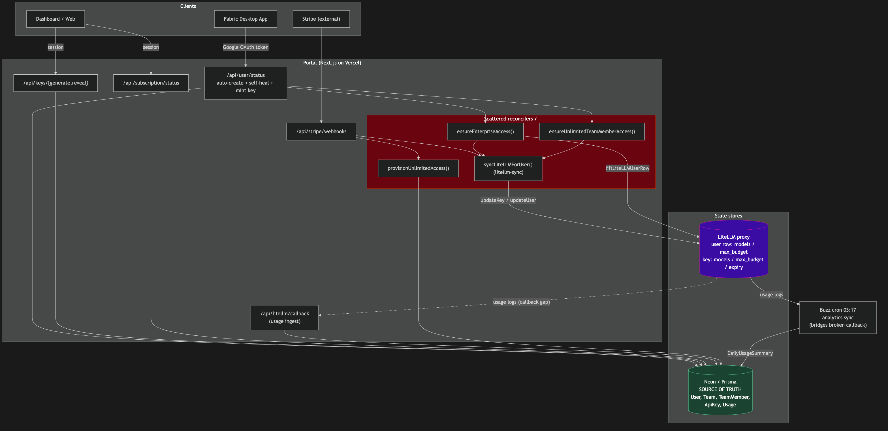
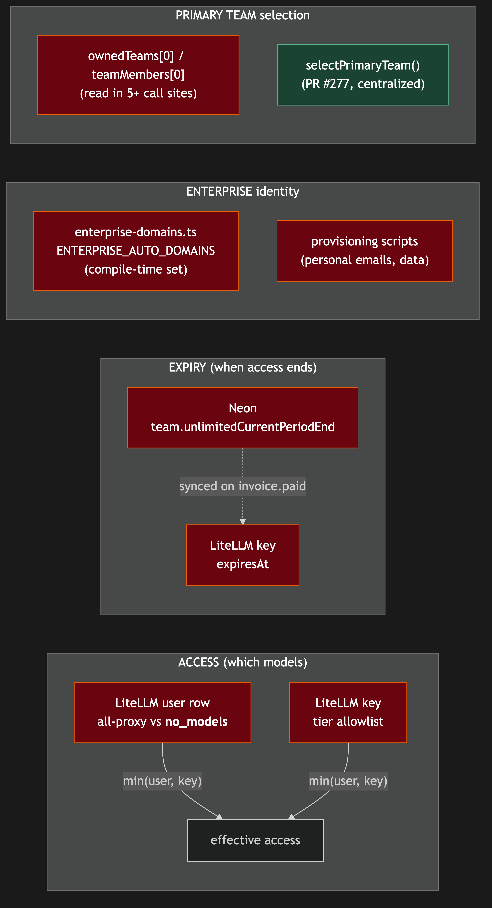

Issue #278: Architecture review + refactor — auth / sign-up / API key / billing lifecycle¶
Summary¶
Conduct a top-to-bottom architectural review of the account lifecycle — authentication & sign-up → API key creation/verification → billing/entitlement — produce diagrams of the real flows, write down the invariants and sources-of-truth, and ship a prioritized refactor backlog. No behavior changes land in this issue. Output is documentation, diagrams, and scoped follow-up PRs. Catalyst: PR #277 (shadow-team entitlement bug).
This is a review + design deliverable. The implementation work is producing the artifacts below, not changing application code.
Root Cause Analysis (why this issue exists)¶
PR #277 fixed a symptom: a proactively-provisioned Enterprise user got a shadow team on first OAuth sign-in, and entitlement resolved via an unordered ownedTeams[0], silently stripping their plan. The codebase exploration for this plan confirms the disease is accidental complexity accreted across incidents:
- The
ownedTeams[0]/teamMembers[0]"primary team" assumption is duplicated in 5+ readers —dashboard/page.tsx,api/user/status,team-helpers.findUserTeamId,litellm-sync,api/keys/generate— each defending against multi-team independently. PR #277 addedselectPrimaryTeambut did not retrofit every reader. The schema does not prevent a user owning >1 team. - Dual sources of truth with manual reconciliation. Access lives in BOTH the LiteLLM user row (
all-proxy-modelsvs__no_models__) and the per-key tier allowlist (min(user,key)). Expiry lives in BOTH Neon (team.unlimitedCurrentPeriodEnd) and the LiteLLM keyexpiresAt. "Is this enterprise" is answered by BOTH a compile-timeENTERPRISE_AUTO_DOMAINSset and data-driven provisioning scripts. - Self-heal logic scattered across hot paths.
ensureEnterpriseAccess,ensureUnlimitedTeamMemberAccess, and the inline key-mint in/api/user/statusall reconcile entitlement on the request path, with overlapping responsibilities. - A known callback gap (LiteLLM → Neon usage) is bridged by an out-of-band Buzz cron at 03:17, not by code in this repo.
Current architecture — portal ↔ Neon ↔ LiteLLM ↔ Buzz cron, with the scattered reconcilers highlighted:
{kind=link}

{kind=link}

Proposed Solution (approach)¶
Work in four review tracks, producing one set of artifacts. Each track maps to a subsystem already scoped in the issue. Reviewers should read the code, not the comments — confirm each invariant against the actual implementation before writing it down.
- Auth & sign-up track — NextAuth v5 (
src/lib/auth.ts), the custom adapter +getUserByEmail/findUserByNormalizedEmailoverride,allowDangerousEmailAccountLinking,events.createUserteam bootstrap, credentials/email-password flow, beta gate, staff/team auth, and theUser/Account/Session/VerificationToken/PasswordResetToken/BetaInvitemodels. - API key track —
/api/user/status(token verify → auto-create → ensure access → mint/return),/api/keys/{generate,reveal},provision-enterprise.ts,provision-unlimited.ts,litellm.ts,litellm-sync.ts, the__no_models__/all-proxy-modelssentinels,min(user,key)enforcement, andcrypto.ts(AES-256-GCM). - Billing & entitlement track — Stripe
checkout/checkout-onetime/portal/webhooks,billing.ts(getAllowedModelsForContextas the single access predicate),enterprise.ts(shapeSubscriptionStatus),balance.ts, team helpers/hierarchy/auth, usage/DailyUsageSummary, and the dual-expiry model. - Cross-cutting synthesis — produce the diagrams, the architecture doc, the prioritized refactor backlog, and the security/entitlement checklist; assert no regressions for each proposed change.
For each track: produce the relevant diagram source (.mmd), render to PNG, document the flow + invariants + source-of-truth, and append findings to the backlog.
Files to Review (no code changes in this issue)¶
| Area | Files | What to capture |
|---|---|---|
| Auth core | src/lib/auth.ts, src/lib/userLookup.ts, src/lib/emailUtils.ts |
JWT session, adapter override, account-linking safety, normalization |
| Email/password | src/app/api/auth/{signup,verify-email,forgot-password,reset-password,resend-verification,clear-stale}, src/lib/{password,email,tokens}.ts |
Token lifetimes, single-use, session invalidation, signup team-bootstrap duplication |
| Beta / staff | src/lib/beta-config.ts, src/lib/beta-gate.ts, src/app/api/beta/*, src/lib/{staff-auth,team-auth}.ts |
4-point beta gate, RBAC matrix |
| API key | src/app/api/user/status/route.ts, src/app/api/keys/{generate,reveal}/route.ts |
Auth modes, self-heal branches, P2002 race handling |
| Provisioning | src/lib/provision-enterprise.ts, src/lib/provision-unlimited.ts |
ensureEnterpriseAccess, ensureUnlimitedTeamMemberAccess, ensureFabricApiKey, liftLiteLLMUserRow idempotency |
| LiteLLM | src/lib/litellm.ts, src/lib/litellm-sync.ts, src/app/api/litellm/callback/route.ts |
min(user,key), sentinels, spend-reset reasons, cost fallback |
| Crypto | src/lib/crypto.ts |
AES-256-GCM, per-key IV, reveal authz, API_KEY_ENCRYPTION_SECRET |
| Stripe/billing | src/app/api/stripe/**, src/lib/{stripe,billing,balance,enterprise}.ts, src/content/pricing-plans.ts |
Webhook events, enterprise guards, tier/model allowlists, dual expiry |
| Teams | src/lib/{team-helpers,team-hierarchy,team-invite,team-emails}.ts, src/app/api/team/** |
selectPrimaryTeam, owner-vs-member, [0] readers |
| Enterprise | src/lib/enterprise-domains.ts, proactive provisioning scripts |
Compile-time domains vs data-driven scripts |
| Schema | prisma/schema.prisma |
All 14 models + relations (User↔Team ownership vs membership) |
New Files (the deliverables)¶
| File | Purpose |
|---|---|
docs/plans/issue-278-architecture.md (in main repo) |
Written architecture doc: each flow, invariants, source-of-truth per state |
docs/plans/issue-278-*.mmd + .png |
The 7 diagrams below (.mmd source → PNG, images only in markdown) |
docs/plans/issue-278-refactor-backlog.md |
Prioritized (impact × risk) refactor items, each scoped to its own PR |
docs/plans/issue-278-security-checklist.md |
Entitlement/security guarantees asserted preserved by each proposed change |
Note: the issue's deliverables live in the main
codewithfabricrepo underdocs/plans/, per repo convention — distinct from this planning artifact in the-plansrepo.
Deliverable Diagrams (7)¶
- Sequence — desktop sign-in →
/api/user/status→ key mint/return, incl. self-heal branches - Sequence — web sign-up (OAuth + credentials) → email verify → team bootstrap → key generate
- Sequence — Stripe checkout → webhook → entitlement / LiteLLM sync
- State machine — a Team's billing/entitlement states (INACTIVE / ACTIVE / Unlimited / Enterprise / expired) + transitions
- State machine — an ApiKey + its LiteLLM user-row state (deny-all
__no_models__→ lifted; key tier allowlist) - ERD — account/billing models and relations (esp. User↔Team ownership vs membership)
- Component/data-flow — portal ↔ Neon ↔ LiteLLM proxy ↔ Buzz analytics cron (the "two sources of truth" map)
Implementation Steps¶
- Land the architecture doc skeleton in
docs/plans/issue-278-architecture.mdwith one section per flow. - Author the 7
.mmddiagrams, render to PNG, embed images only. - Per track, verify each invariant against the code and fill the source-of-truth table.
- Compile findings into the prioritized refactor backlog (seeded below), each item scoped to a standalone PR.
- Write the security/entitlement checklist asserting no regression for each proposed refactor.
- Open the doc PR; each refactor item becomes its own scoped, individually-reviewed PR afterward.
Seed Refactor Backlog (expand during review)¶
Prioritized by impact × risk. Each item is scoped to become its own PR.
| # | Item | Impact | Risk | Notes |
|---|---|---|---|---|
| 1 | Single primary-team predicate. Retrofit all ownedTeams[0]/teamMembers[0] readers (dashboard, /api/user/status, findUserTeamId, litellm-sync, keys/generate) to selectPrimaryTeam. Then decide: enforce ≤1 owned team in the data model, or make multi-team first-class. |
High | Med | Direct continuation of #277; eliminates the bug class entirely. |
| 2 | One idempotent reconcileEntitlement(userId). Collapse ensureEnterpriseAccess + ensureUnlimitedTeamMemberAccess + the inline key-mint into a single idempotent function; make it the only entitlement self-heal entry point. |
High | Med | Removes overlapping hot-path logic; easier to test once. |
| 3 | Single LiteLLM writer. Make litellm-sync the only code that writes to LiteLLM (key + user row); have provisioning call it rather than calling litellm.updateKey/updateUser directly. |
High | Med | Closes drift between Neon and LiteLLM; one place to reason about min(user,key). |
| 4 | Enterprise identity as one data-sourced predicate. Replace the compile-time ENTERPRISE_AUTO_DOMAINS set + script-provisioned personal emails with a single "is this account enterprise" predicate sourced from data. |
Med | Med | Removes two code paths that can disagree. |
| 5 | Close the LiteLLM callback gap in code. Document and, separately, replace/standardize the Buzz cron bridge with an in-repo reconciler or a hardened callback. | Med | Med | Currently out-of-band; a TOCTOU/observability gap. |
| 6 | De-duplicate signup team bootstrap. events.createUser and the signup route both bootstrap a team (signup bypasses the adapter). Extract one shared bootstrap helper. |
Med | Low | Two divergent copies of the same logic. |
| 7 | Confirm + lint the access gate. Assert the access gate is the models allowlist (never max_budget) everywhere; flag any code treating budget as an access gate. |
Med | Low | Per prior corrections (Ryan, twice). |
| 8 | Test coverage for cross-system reconcile + webhooks. Add tests for invariants surfaced by the diagrams (reconcile paths, webhook replay/ordering). | Med | Low | Fills the gaps the review exposes. |
Test Strategy¶
This issue produces no behavior changes, so there is no application code to unit-test here. Verification of the deliverable:
- Diagram fidelity: each diagram cross-checked against the actual code paths it depicts (the exploration in this plan is the baseline).
- Invariant assertions: every "source of truth" claim in the architecture doc is backed by a file:line reference.
- Backlog scoping check: each backlog item is independently shippable (no item requires another to land first, or the dependency is stated).
- Security checklist: each proposed refactor is paired with the guarantee(s) it must preserve and how to verify them.
- For the follow-up refactor PRs (out of scope here): TDD per the repo workflow, with tests written before the refactor, plus
npm run typecheckandnpm run build.
Risks & Mitigations¶
| Risk | Mitigation |
|---|---|
| Review documents the intended design, not the actual one (comment drift) | Read code, not comments; back every invariant with a file:line citation. |
| A refactor silently weakens an entitlement guarantee | Security/entitlement checklist gates every backlog item; "err on the side of access" for enterprise (Go.team etc.) is a hard rule — see provision-enterprise.ts. |
| Diagrams go stale immediately after merge | Keep .mmd sources in-repo so they regenerate; reference them from the doc, not inline. |
| Scope creep — refactors sneak into the review PR | Hard constraint: this issue ships docs/diagrams/backlog only. Refactors are separate, individually-reviewed PRs. |
| "Single owned team" enforcement breaks an existing multi-team user | Audit production data for any user with >1 owned team before enforcing; prefer making multi-team first-class if any exist. |
Constraints (from the issue)¶
- Preserve all functionality and every security/entitlement guarantee. "Err on the side of access" for enterprise accounts is a hard business rule.
- Refactor for elegance/clarity, not novelty — prefer collapsing scattered/duplicated logic and making invariants explicit over rewrites.
- Diagrams follow the repo convention: separate
.mmd→ PNG, images only in markdown. - No behavior changes in this issue; refactors land as separate PRs.